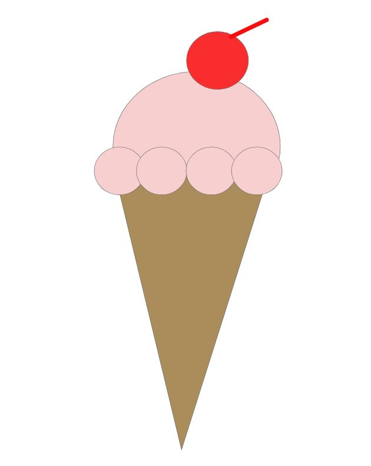

Step 1: open XD
Step 2: Create a 1000 by 1000 custom board
Step 3: Create a circle using the circle tool, 300 by 300
Step 4: Fill you circle with the color of a Hubba bubba bubble gum
Step 5: Create a triangle using the triangle tool, around 600 height and 300 width
Step 6: Flip the triangle over so the pointy part is near the bottom of the board and the base of the triangle touches the circle
Step 7: Take your circle from earlier and duplicate it 4 times
Step 8: Resize each duplicate to 100 by 100
Step 9: Make each mini circle adjacent to eachother
Step 10: Duplicate another mini circle and place it on top of your big circle
Step 11: Fill it in with the color of love
Step 12: Add a line that shoots out of your color-of-love circle, and make it the same color
Step 13: Make that line about 36 px long
Step 14: Email the final product to laurenbday@hotmail.com
